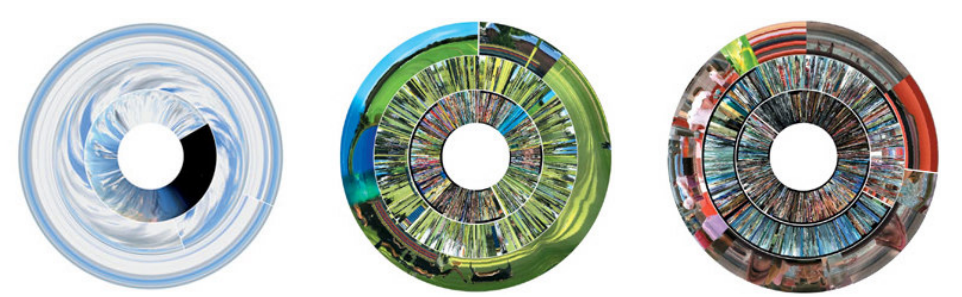

Data-Driven Art Reflection
Data-driven art shows the intersection of science and art and there are many artists who use raw data to create their artworks. These works can be identified by their “intent rather than surface aesthetics” (Viégas and Wattenberg, 2007, p. 3) because the data used in the artwork still needs to represent and portray the important information one can extract from it. Viégas and Wattenberg (2007, p. 1) emphasise in their paper that artists “appropriate and repurpose “scientific” techniques” that call for visual analysis; where reasoning and contextualisation is encouraged through their choice of medium and subject matter. Data can be used in various ways to create artworks and artists tend to find and use mediums and techniques that fit or suit the data best. For example, Last Clock, by Jussi Ängeslevä & Ross Cooper is made up of sliced video footage warped into three concentric circles to form a clock. The outermost warped video plays in seconds, the middle in minutes, and the innermost in hours. Viégas and Wattenberg (2007, p. 8) note that this artwork and form of data visualisation creates a powerful and meaningful record of time and place as the clock “becomes a unique emblem of its surroundings.”
When looking for data-driven artwork online, I came across the work of Giorgia Lupi, an information designer and the artist-in-residence for Art + Data. She has been noticed for challenging the “rigidness of data, designing approachable visual narratives that allow numbers to portray what they stand for: stories, people, and ideas” (Gordon, 2021). In 2020, Lupi made a series of artworks that superimposed visualised and illustrated data over photographs of real life. Lupi's work stands out because of her use of graphs which my chosen visualisation technique for this website. Below is an example of how she uses photos from everyday life that can be used as tools for representing data.

In this piece, Lupi uses windows to represent bills relating to legislative responses for policing. A single window represents a single bill. Lupi could easily superimpose data (visualised through a bar graph) on the image through the use of the windows as they allow for bars to be drawn across the buildings. This data-driven artwork relates best to my website, and inspired my data-driven artwork, because of its use of grid structures. The windows of each building are organised in a grid and even the buildings themselves are organised in the gridlines of the city. This encouraged me to think of everyday objects that also use grids in their composition that could be used to make my own data-driven artwork. Before I speak on my own artwork, here are some other pieces that Lupi created.

Above shows air pollution levels trending downward due to people staying at home during lockdowns. Lupi's data was taken from “An Analysis of the Impact of the CoronaVirus Lockdown on our Environment” posted by Towards Data Science. Lupi superiposes visualised data about pollution over a photo of the sky, giving the artwork a focused intention and meaning. Below shows the percentages of people who took different actions against racial inequality. The data was taken from “Amid Protests, Majorities Across Racial and Ethnic Groups Express Support for the Black Lives Matter Movement” by Pew Research Center. Again, Lupi focuses the viewer's attention and understanding of the data by superimposing data about people over a photo of a group of people.

Lupi's depiction of data through her pieces of artwork share profound meaning and insight about the data the pieces represent. The photos she uses are related to the data to support the viewers understanding and contexualisation. Thus, choosing objects or capturing settings that relate to the data being represented can seriously impact how the viewers perceive the relationship between the data and the artwork, and subsequently, their ability to understand both.
The data I use is based off of games that are on sale and thus falls into the realm of gaming and related technology. For my data-driven artwork, I chose to represent some aspects of the data through a bar graph made out of a keyboard. Keyboards are used in PC gaming and hold deep connotative meaning in the digital realm. They imply a good or bad game, communication in lobbies, enable us to walk and run in game worlds. They also are unique in how they can be personalised ranging from colours or RBG light behaviours. They form part of the greater scheme of representing games. Because of their keys being organised in a grid like fashion, they also make for great bar graph enclosures.

This is a static and first iteration of my site's data-driven artwork, inspired by Lupi's use of real-life photos that create spaces for data to be visualised in. I not only used a keyboard for its grid-like structure, but also because of its use of text. Because keyboards contain letters, numbers or symbols on their keys, it allows for the appropriate text to accompany the data in an organic way. Much like how Lupi's use of the windowpanes of a building allow for bar graphs to be formed.
To conclude, data-driven artwork shows us how science and art intersect with one another and how data visualisation lies at the forefront of this relationship. Chloe Gordon (2021) adds to our definition and understanding of data visualisation as she states it “is an interdisciplinary specialty that dissects facts and information and reformats it into digestible graphical representations”. Interdisciplinary is the key term that highlights the relationship between data science and data-driven artwork. Learning and using the best practices to work within the relationship will hopefully enable artists to create meaningful and impactful artwork that can contribute to society.